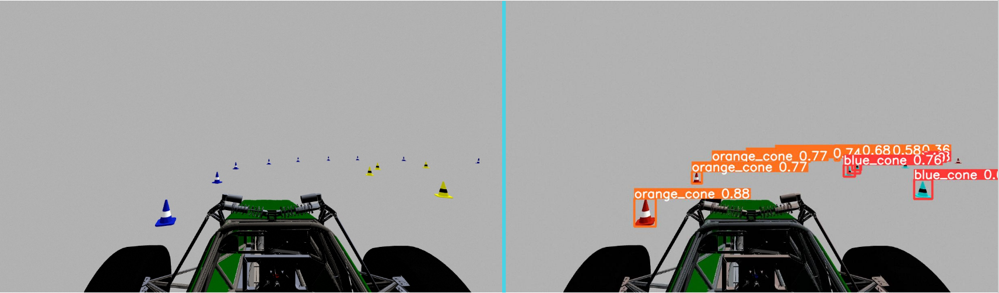
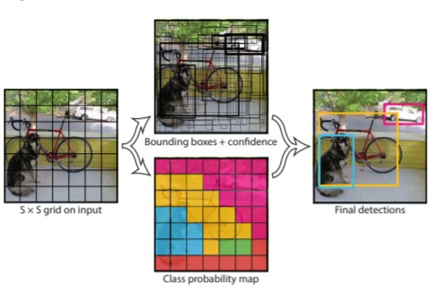
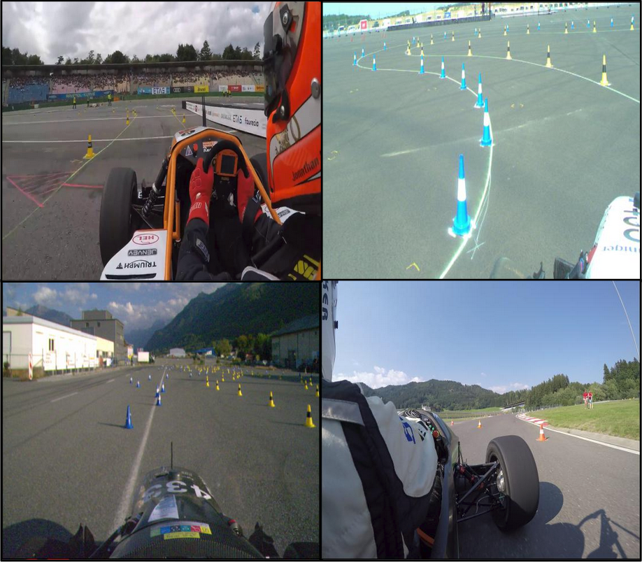
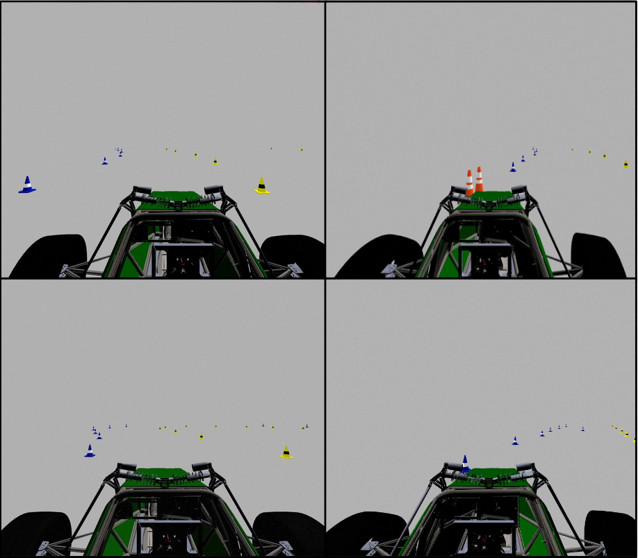
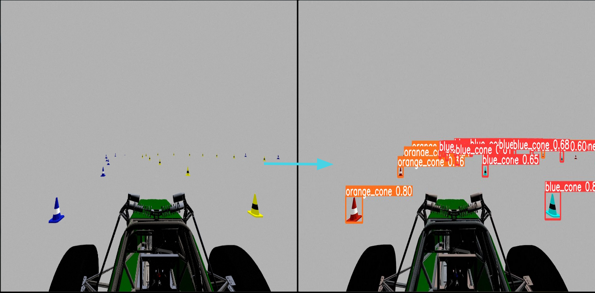
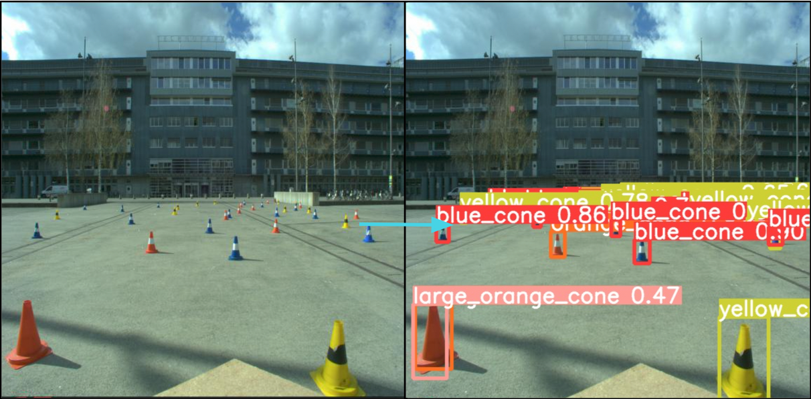
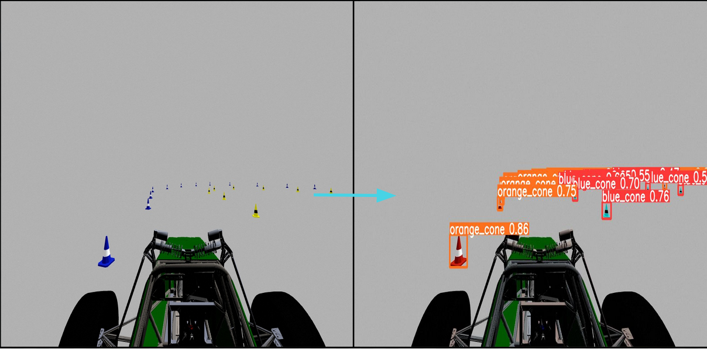

YOLO Cone Detection Model

YOLOv5 (You Only Look Once) is a state-of-the-art object detection model that is used to localize features within an image. As the lead of the Perceptions team on Carnegie Autonomous Racing, my team and I have been developing this model to identify blue and yellow cones that denote the track our autonomous racecar needs to follow.

Theory of YOLO
Unlike other object detection neural networks, which generate predictions after evaluating region proposals
multiple times, YOLO has been built to output bounding box predictions after only a single pass of the entire
image. This dramatically reduces execution time, making YOLO a clear choice for autonomous vehicle perception
systems which require high refresh rates. To create its predictions, YOLO follows the following steps:
- The image is split into an nxn grid where n is a parameter set by the model designer. The larger n is,
the higher the resolution of the grid, thereby allowing for detection of smaller and more frequent objects
in the frame.
-
Each grid cell is responsible for outputting a number of bounding box predictions for objects that appear in
that cell. For predictions originating from empty cells, they are associated with a very low confidence score,
indicating that bounding box is worthless. However, for predictions originating from cells that contain objects,
they are associated with high confidence scores.
,-
All bounding box predictions from all grid cells are aggregated, and only those predictions with a confidence higher
than some threshold (usually 80%) are actually output.
Training Data
We started with a pretrained YOLOv5 model that was trained on the COCO dataset. This provided baseline weights that we could specifically train to recognize cones. To achieve cone detection, we trained the model on a dataset consisting of two styles of images:


FSOCO Images
Formula Student provides an open-source dataset of real-world images of cones from the perspective of a racing car. Each image comes with the ground-truth data labelled, allowing the model to be trained.
Simulator Images
Our team uses an open-source Formula Student simulator and collected time-synchronized images from the simulator's stereo camera.
After almost 20 hours of training, here are some examples of what our model can do:


